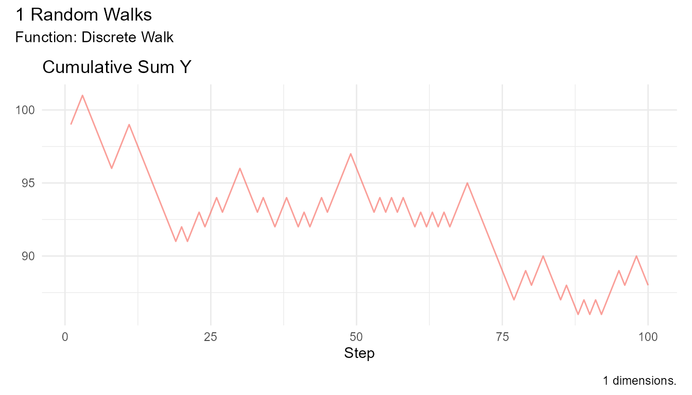
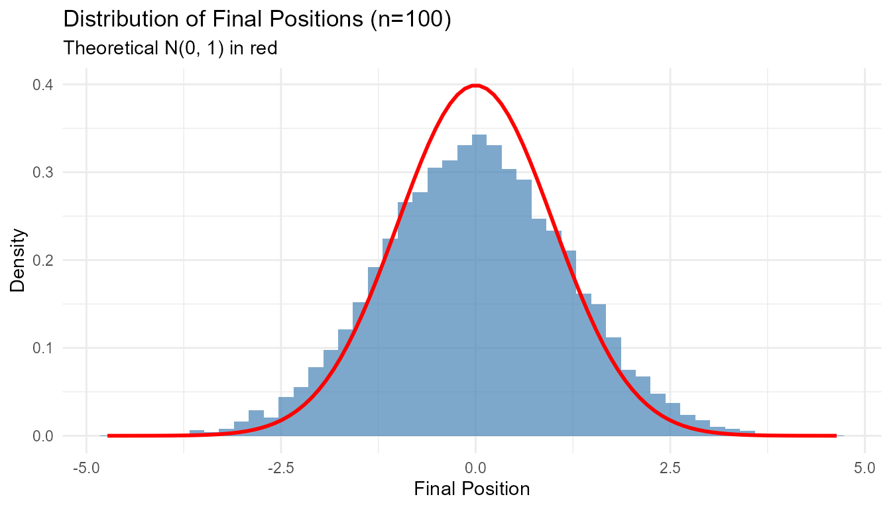
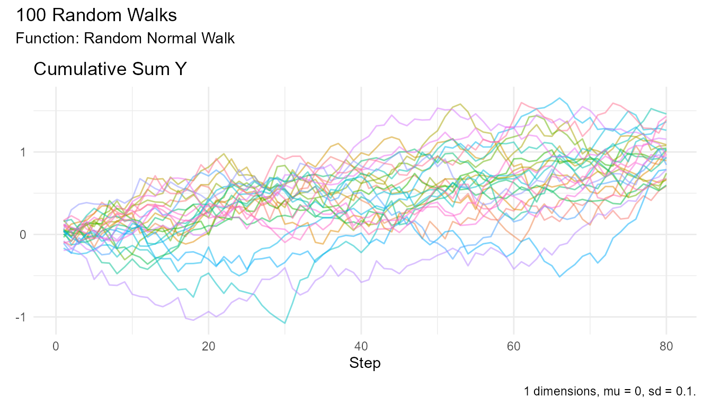

Understanding the fundamentals of random walks and how RandomWalker implements them.
What is a Random Walk?
A random walk is a mathematical model describing a path consisting of a succession of random steps. At each point in time, the next step is determined by chance.
Simple Example
Imagine flipping a coin: - Heads: Move one step forward (+1) - Tails: Move one step backward (-1) - Start: Position 0
After 10 flips, you might be at position +2, -4, or anywhere else. This is a random walk!
# Coin flip random walk
coin_walk <- discrete_walk(
.num_walks = 1,
.n = 100,
.upper_bound = 1,
.lower_bound = -1,
.upper_probability = 0.5
)
coin_walk |> visualize_walks(.pluck = "cum_sum")
Types of Random Walks
1. Simple Random Walk
Each step is ±1 with equal probability:
discrete_walk(
.num_walks = 10,
.upper_bound = 1,
.lower_bound = -1,
.upper_probability = 0.5
) |> head(10)
#> # A tibble: 10 × 8
#> walk_number step_number y cum_sum_y cum_prod_y cum_min_y cum_max_y
#> <fct> <int> <dbl> <dbl> <dbl> <dbl> <dbl>
#> 1 1 1 1 101 200 101 101
#> 2 1 2 1 102 400 101 101
#> 3 1 3 -1 101 0 99 101
#> 4 1 4 -1 100 0 99 101
#> 5 1 5 -1 99 0 99 101
#> 6 1 6 1 100 0 99 101
#> 7 1 7 1 101 0 99 101
#> 8 1 8 1 102 0 99 101
#> 9 1 9 1 103 0 99 101
#> 10 1 10 1 104 0 99 101
#> # ℹ 1 more variable: cum_mean_y <dbl>Properties: - Symmetric (unbiased) - Steps are independent - Mean position = 0 - Variance grows linearly with time
2. Random Walk with Drift
Steps have a non-zero mean (bias in one direction):
random_normal_drift_walk(
.num_walks = 10,
.drift = 0.1 # Positive drift
) |> head(10)
#> # A tibble: 10 × 8
#> walk_number step_number y cum_sum_y cum_prod_y cum_min_y cum_max_y
#> <fct> <int> <dbl> <dbl> <dbl> <dbl> <dbl>
#> 1 1 1 -1.47 -1.47 0 -1.47 -1.47
#> 2 1 2 -2.49 -3.96 0 -2.49 -1.47
#> 3 1 3 2.15 -1.81 0 -2.49 2.15
#> 4 1 4 1.15 -0.654 0 -2.49 2.15
#> 5 1 5 1.42 0.769 0 -2.49 2.15
#> 6 1 6 -0.348 0.421 0 -2.49 2.15
#> 7 1 7 0.769 1.19 0 -2.49 2.15
#> 8 1 8 0.0966 1.29 0 -2.49 2.15
#> 9 1 9 3.81 5.10 0 -2.49 3.81
#> 10 1 10 0.984 6.09 0 -2.49 3.81
#> # ℹ 1 more variable: cum_mean_y <dbl>Properties: - Asymmetric (biased) - Tends to move in one direction - Mean position ≠ 0 - Can model trending data
3. Brownian Motion (Wiener Process)
Continuous-time random walk:
brownian_motion(
.num_walks = 10,
.delta_time = 1
) |> head(10)
#> # A tibble: 10 × 8
#> walk_number step_number y cum_sum_y cum_prod_y cum_min_y cum_max_y
#> <fct> <int> <dbl> <dbl> <dbl> <dbl> <dbl>
#> 1 1 1 0.00165 0.00165 0 0.00165 0.00165
#> 2 1 2 -1.19 -1.19 0 -1.19 0.00165
#> 3 1 3 0.362 -0.823 0 -1.19 0.362
#> 4 1 4 -0.549 -1.37 0 -1.19 0.362
#> 5 1 5 0.693 -0.680 0 -1.19 0.693
#> 6 1 6 -0.0608 -0.741 0 -1.19 0.693
#> 7 1 7 -1.19 -1.93 0 -1.19 0.693
#> 8 1 8 -0.120 -2.05 0 -1.19 0.693
#> 9 1 9 -0.708 -2.76 0 -1.19 0.693
#> 10 1 10 -1.62 -4.38 0 -1.62 0.693
#> # ℹ 1 more variable: cum_mean_y <dbl>Properties: - Continuous in time - Normally distributed increments - Foundation of stochastic calculus - Used in physics and finance
4. Geometric Brownian Motion
Multiplicative random walk (always positive):
geometric_brownian_motion(
.num_walks = 10,
.initial_value = 100
) |> head(10)
#> # A tibble: 10 × 8
#> walk_number step_number y cum_sum_y cum_prod_y cum_min_y cum_max_y
#> <fct> <int> <dbl> <dbl> <dbl> <dbl> <dbl>
#> 1 1 1 1.00 101. 200. 101. 101.
#> 2 1 2 1.01 102. 403. 101. 101.
#> 3 1 3 1.00 103. 807. 101. 101.
#> 4 1 4 1.00 104. 1616. 101. 101.
#> 5 1 5 1.01 105. 3245. 101. 101.
#> 6 1 6 1.01 106. 6519. 101. 101.
#> 7 1 7 1.01 107. 13136. 101. 101.
#> 8 1 8 1.02 108. 26474. 101. 101.
#> 9 1 9 1.02 109. 53464. 101. 101.
#> 10 1 10 1.02 110. 107797. 101. 101.
#> # ℹ 1 more variable: cum_mean_y <dbl>Properties: - Cannot go negative - Used for stock prices - Log-normal distribution - Percentage changes are normal
Key Properties
Property 1: Mean Displacement
For a symmetric random walk starting at 0:
Expected value after n steps = 0
# Verify empirically
walks <- random_normal_walk(.num_walks = 1000, .n = 100)
walks |>
summarize(overall_mean = mean(cum_sum_y))
#> # A tibble: 1 × 1
#> overall_mean
#> <dbl>
#> 1 -0.0648Property 2: Variance Growth
For standard random walk:
Variance after n steps = n
# Verify empirically
walks <- random_normal_walk(.num_walks = 1000, .n = 100)
walks |>
filter(step_number == 80) |>
summarize(
variance = var(cum_sum_y),
theoretical = 80
)
#> # A tibble: 1 × 2
#> variance theoretical
#> <dbl> <dbl>
#> 1 1.45 80Property 3: Distance from Origin
Expected distance grows as √n:
E[|position|] ∝ √n
# Verify with 2D walk
walks_2d <- random_normal_walk(.num_walks = 100, .n = 500, .dimensions = 2)
walks_2d |>
euclidean_distance(.x = x, .y = y) |>
group_by(step_number) |>
reframe(
mean_distance = mean(distance),
theoretical = sqrt(step_number)
) |>
filter(step_number %% 50 == 0) |>
head(10)
#> # A tibble: 10 × 3
#> step_number mean_distance theoretical
#> <int> <dbl> <dbl>
#> 1 50 0.180 7.07
#> 2 50 0.180 7.07
#> 3 50 0.180 7.07
#> 4 50 0.180 7.07
#> 5 50 0.180 7.07
#> 6 50 0.180 7.07
#> 7 50 0.180 7.07
#> 8 50 0.180 7.07
#> 9 50 0.180 7.07
#> 10 50 0.180 7.07Property 4: First Return to Origin
For 1D symmetric walk: - Probability of eventual return = 1 (certain to return) - Expected return time = ∞ (infinite expected time!)
For 2D symmetric walk: - Probability of eventual return = 1
For 3D symmetric walk: - Probability of eventual return ≈ 0.34 (not certain!)
Mathematical Background
One-Dimensional Random Walk
Position after n steps:
X(n) = X(0) + Σ(i=1 to n) ΔᵢWhere Δᵢ are independent random steps.
For standard normal walk: - Δᵢ ~ N(0, 1) - X(n) ~ N(0, n) - E[X(n)] = 0 - Var[X(n)] = n
RandomWalker Implementation
How RandomWalker Works
- Generate random steps from specified distribution
- Compute cumulative sum (position over time)
- Add cumulative statistics (min, max, mean, product)
- Return tidy tibble for analysis
Example: Behind the Scenes
# What rw30() does internally:
# 1. Generate random steps
steps <- rnorm(100, mean = 0, sd = 1)
# 2. Compute cumulative sum
positions <- cumsum(c(0, steps[-100]))
# 3. Add to tibble
walk_data <- tibble::tibble(
step_number = 1:100,
y = steps,
cum_sum = positions
)
# 4. Add more cumulative functions
walk_data <- walk_data |>
mutate(
cum_prod = cumprod(1 + y),
cum_min = cummin(y),
cum_max = cummax(y),
cum_mean = cumsum(y) / step_number
)
walk_data |> head(10)
#> # A tibble: 10 × 7
#> step_number y cum_sum cum_prod cum_min cum_max cum_mean
#> <int> <dbl> <dbl> <dbl> <dbl> <dbl> <dbl>
#> 1 1 -1.18 0 -0.176 -1.18 -1.18 -1.18
#> 2 2 0.607 -1.18 -0.282 -1.18 0.607 -0.284
#> 3 3 0.552 -0.569 -0.438 -1.18 0.607 -0.00553
#> 4 4 0.455 -0.0166 -0.637 -1.18 0.607 0.110
#> 5 5 0.181 0.438 -0.752 -1.18 0.607 0.124
#> 6 6 -1.25 0.619 0.187 -1.25 0.607 -0.105
#> 7 7 1.67 -0.630 0.499 -1.25 1.67 0.148
#> 8 8 -0.761 1.04 0.120 -1.25 1.67 0.0346
#> 9 9 1.14 0.277 0.256 -1.25 1.67 0.157
#> 10 10 -0.644 1.42 0.0910 -1.25 1.67 0.0772Dimensions
1D Walk: - Single value per step: y -
Position: cum_sum
2D Walk: - Two values per step: x,
y - Position: (cum_sum_x, cum_sum_y) -
Distance: sqrt(cum_sum_x² + cum_sum_y²)
3D Walk: - Three values per step: x,
y, z - Position:
(cum_sum_x, cum_sum_y, cum_sum_z) - Distance:
sqrt(cum_sum_x² + cum_sum_y² + cum_sum_z²)
Common Terminology
Terms Used in RandomWalker
| Term | Definition | Example |
|---|---|---|
| Walk | A single realization of the random process | One stock price path |
| Step | One random increment | Daily price change |
| Trajectory | Path taken by the walk | Price history |
| Cumulative sum | Running total of steps | Stock price level |
| Displacement | Distance from starting point | Profit/loss |
| Excursion | Distance from reference point | Drawdown |
| First passage time | Time to first reach a level | Time to profit |
| Return time | Time to return to starting point | Recovery time |
Worked Examples
Example 1: Verify Properties
# Generate many walks
walks <- random_normal_walk(.num_walks = 1000, .n = 100)
# Property 1: Mean = 0
walks |>
summarize(overall_mean = mean(cum_sum_y))
#> # A tibble: 1 × 1
#> overall_mean
#> <dbl>
#> 1 0.0275
# Property 2: Variance = n
walks |>
filter(step_number == 80) |>
summarize(
variance = var(cum_sum_y),
theoretical = 80
)
#> # A tibble: 1 × 2
#> variance theoretical
#> <dbl> <dbl>
#> 1 1.39 80
# Property 3: Distance ∝ √n
walks |>
group_by(step_number) |>
summarize(
mean_abs_position = mean(abs(cum_sum_y)),
theoretical = sqrt(2/pi) * sqrt(step_number) # Exact for normal
) |>
filter(step_number %% 20 == 0) |>
head(5)
#> Warning: Returning more (or less) than 1 row per `summarise()` group was deprecated in
#> dplyr 1.1.0.
#> ℹ Please use `reframe()` instead.
#> ℹ When switching from `summarise()` to `reframe()`, remember that `reframe()`
#> always returns an ungrouped data frame and adjust accordingly.
#> Call `lifecycle::last_lifecycle_warnings()` to see where this warning was
#> generated.
#> `summarise()` has grouped output by 'step_number'. You can override using the
#> `.groups` argument.
#> # A tibble: 5 × 3
#> # Groups: step_number [1]
#> step_number mean_abs_position theoretical
#> <int> <dbl> <dbl>
#> 1 20 0.390 3.57
#> 2 20 0.390 3.57
#> 3 20 0.390 3.57
#> 4 20 0.390 3.57
#> 5 20 0.390 3.57Example 2: Distribution of Final Position
# Generate walks
walks <- random_normal_walk(.num_walks = 10000, .n = 100)
# Get final positions
final_pos <- walks |>
group_by(walk_number) |>
slice_max(step_number) |>
pull(cum_sum_y)
# Plot
tibble::tibble(position = final_pos) |>
ggplot(aes(x = position)) +
geom_histogram(aes(y = after_stat(density)), bins = 50,
fill = "steelblue", alpha = 0.7) +
stat_function(fun = dnorm, args = list(mean = 0, sd = 1),
color = "red", linewidth = 1) +
theme_minimal() +
labs(
title = "Distribution of Final Positions (n=100)",
subtitle = "Theoretical N(0, 1) in red",
x = "Final Position",
y = "Density"
)
Example 3: Path Dependency
Random walks are path-dependent - the ending doesn’t tell you the route:
# Generate walks ending at similar positions
set.seed(123)
walks <- random_normal_walk(.num_walks = 100, .n = 100)
# Find walks ending near 10
similar_end <- walks |>
group_by(walk_number) |>
filter(step_number == 80, abs(cum_sum_y - 1) < 0.5)
# Plot their paths - very different!
walks |>
filter(walk_number %in% similar_end$walk_number) |>
visualize_walks(.pluck = "cum_sum", .alpha = 0.5)
Next Steps
Now that you understand the basics:
- Quick Start Guide - Start using RandomWalker (see Getting Started vignette)
- Continuous Distribution Generators - Explore distributions (see API Reference)
- Statistical Analysis Guide - Analyze properties
- Use Cases and Examples - Real-world applications
Further Reading
Academic Resources
-
Books:
- “Random Walks and Electric Networks” by Doyle & Snell
- “A Guide to Brownian Motion” by Mörters & Peres
- “Stochastic Processes” by Ross
-
Papers:
- Einstein’s 1905 paper on Brownian motion
- Pearson’s 1905 paper introducing the term “random walk”